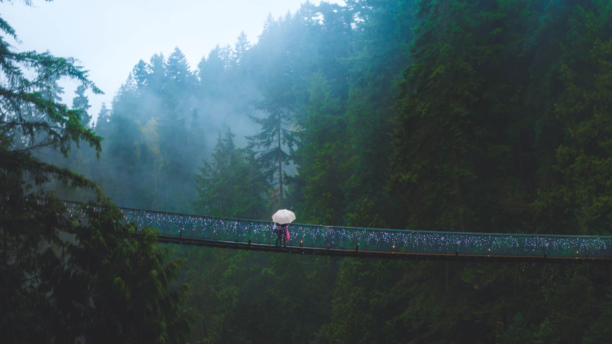
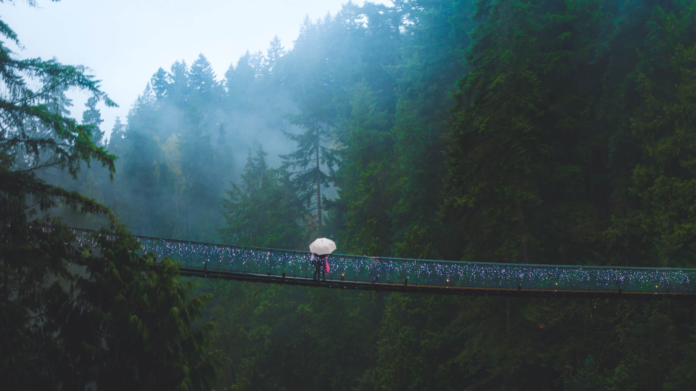

Vancouver Art Gallary
Robson Street is a popular destination for shopping, but don’t miss the Vancouver Art Gallery. The Gallery’s collection is highly acclaimed, featuring both contemporary arts and historical exhibitions. The well-known British Columbian artist Emily Carr has a dedicated collection, so be sure to check it out for some local pride.


 
